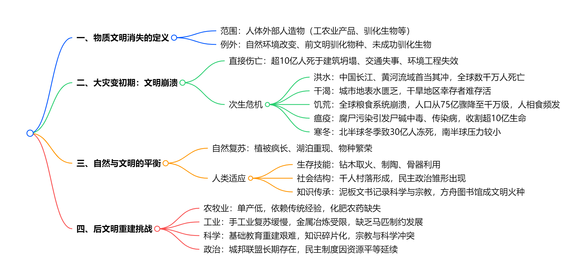

读库1901¶
开始阅读时间：2025-05-12
结束阅读时间：2025-05-18
01-如果物质文明瞬间消失¶
个人评价：★★★ 一个假象的白日梦？
一段话总结¶
文档假设物质文明瞬间消失的"大灾变"场景，规定物质文明定义后，分三部分推演人类文明崩溃与重建：初期超10亿人瞬间死亡，幸存者面临洪水、干渴、饥荒、瘟疫、寒冬等多重危机，人相食现象爆发；随后世界人口骤降至2亿以下，自然快速复苏；幸存者逐步重建农牧业、工业与科学，科学火种依赖基础教育传承，后文明可能在200-300年内重启工业革命，但地区差异显著。
思维导图¶

详细总结¶
一、物质文明消失的定义与范围¶
定义：文明社会中因人类有目的行为产生、存在于人体外部的事物，包括工农业资产、人造物、驯化生物及代谢产物（如塑料、碳排放）。
例外：
-
自然环境改变（如大气成分、土壤状态）不计入。
-
驯化生物：文明社会正在种植/养殖的驯化物种消失，前文明驯化物种（如小麦、家犬）及未成功驯化物种（如日本鳗鲡）保留。
-
特殊案例：伦敦地铁蚊子（新物种）、人工野化动物（如朱鹮、麋鹿）不消失。
二、大灾变初期：毁灭性冲击¶
- 直接死亡与基础设施崩塌
- 死亡人数：超10亿人瞬间死亡，因高楼地基消失、交通工具失事、填海区域沉没等。
-
典型区域：荷兰（低地国家）、沿海城市（如上海、纽约）受灾最重。
-
次生灾害链
| 危机类型 | 影响范围与后果 | 关键数据/案例 |
|---|---|---|
| 洪水 | 中国长江、黄河流域首当其冲，三峡等水库溃决引发洪峰 | 黄河洪峰推进渤海入海口数里，长江中下游堤防溃决 |
| 干渴 | 城市地表水迅速渗漏，干旱地区幸存者脱水死亡 | 无河流城市死亡率超90% |
| 饥荒 | 全球粮食系统崩溃，人口从75亿骤降至旧石器时代水平（千万级） | 每平方公里土地仅能养活1人，人相食事件频发 |
| 瘟疫 | 腐尸污染引发尸碱中毒、霍乱、鼠疫等 | 全球爆发急性传染病，死亡超10亿人 |
| 寒冬 | 北半球冬季致30亿人冻死，南半球压力较小 | 北纬30°以北地区几乎无幸存者 |
三、自然复苏与人类适应¶
- 自然生态反弹
- 植被与物种：野草灌木疯长，湖泊湿地恢复（如洞庭湖、咸海），候鸟迁徙成功率提升，野生动物种群爆发（如欧洲原牛、高鼻羚羊）。
-
环境变化：碳排放消失使气候凉爽，污染减轻，能见度提升10倍。
-
人类生存策略
- 技能重建：钻木取火、制陶、骨器制作（如骨针、骨矛），利用人皮制作衣物。
- 社会结构：形成数百人小型社群，以血缘和熟人关系为纽带，民主讨论公共事务（如粮食分配、防御工事）。
- 知识传承：用泥板、石片记录科学与宗教，方舟图书馆储存基础科学（如物理定律、化学元素）和生存技能。
四、后文明重建的核心挑战¶
- 农牧业瓶颈
- 单产低下：无化肥农药，粮食单产仅为前文明的1/10（如小麦单产从5吨/公顷降至0.5吨/公顷）。
-
驯化进程：优先驯化黄鼠、穴兔等繁殖快的物种，杂交选育农作物（如野生稻与栽培稻杂交）。
-
工业复兴障碍
- 手工业局限：无金属工具，木制织布机、陶器窑炉需从头发明，冶金依赖露天矿和陨铁。
-
交通制约：缺乏马匹，无法运输大宗矿产（如铁矿与煤矿分离），工业革命推迟200-300年。
-
科学与宗教的冲突
- 知识断层：现代科学仅存于初代幸存者记忆，碎片化知识难以重构体系（如高能物理无法实践）。
-
宗教演变：现有宗教分裂为万余个教派，新宗教（如“科学教”）将科学神化，形成信仰冲突。
-
政治与社会形态
- 民主雏形：数百人社群实行直接民主，无阶级分化（因缺乏垄断性武器）。
- 城邦联盟：文化认同促进邻近社群合并，但缺乏畜力导致统一政权难以形成。
关键问题¶
问题：大灾变初期导致人类大量死亡的最主要原因是什么？¶
答：直接死亡源于基础设施崩塌（如高楼、交通失事），但次生灾害中的饥荒和瘟疫是主要杀手。全球粮食系统崩溃导致至少50亿人饿死，腐尸引发的传染病又收割超10亿生命。
问题：后文明重建中，科学传承的最大障碍是什么？¶
答：知识载体消失与专业人才匮乏。书籍、硬盘等毁灭，科研设备荡然无存，且掌握科学的幸存者多集中于城市（早期死亡惨重），剩余知识碎片化，难以重构完整体系。
问题：自然复苏对后文明的双重影响是什么？¶
答： 积极：植被恢复提供食物与建材，野生动物种群扩大成为狩猎资源，湖泊湿地净化水源。 消极：入侵物种（如海蟾蜍）失控，部分地区（如西非）因森林砍伐失去退路，加剧生存竞争。
我想说的话¶
一个人就靠想象能写出来这么一篇文章，我也是很佩服，可我对本文并不感兴趣 o(╥﹏╥)o
2025年7月28日再读之后稍稍读懂了一些，但是还是对这种纯属虚幻的事情提起兴趣。
02-《四郎探母》复出四十年¶
一段话总结¶
京剧《四郎探母》历史悠久，曾深受慈禧太后喜爱，但1949年后因杨四郎在番邦的经历被禁演长达三十年，期间历经波折。“文革”后，郭永江为其鸣不平，文章引发反响。1979年风雷京剧团率先演出，后中国戏曲学院实验京剧团等也陆续演出。1980年《北京晚报》主办的演出引起轰动，场场爆满。这出戏还培养了众多演员，如安云武、李维康、耿其昌等。2007年福建省京剧团将其带到法国演出，同样大获成功。如今，《四郎探母》已成为经典保留剧目，深受观众喜爱。
思维导图¶
详细总结¶
《四郎探母》的历史背景与禁演¶
京剧《四郎探母》历史悠久，清朝沈容圃的戏画《同光十三绝》中就有杨月楼饰演的杨四郎和梅巧玲饰演的萧太后。梅巧玲演出的版本深受慈禧太后喜爱。然而，1949年后，因杨四郎在番邦隐名埋姓的驸马生活，这出戏被视为有“争议”的戏。1949年《人民日报》社论指出其为“有害”剧目，此后长达三十年被禁止、批判，在“文革”期间更是与“党内最大的走资本主义道路的当权派”相联系，被戴上“大叛徒”的帽子。
“文革”后的复出历程¶
-
呼吁解禁：“文革”结束后，郭永江在1978年底上海昆剧团进京演出《蔡文姬》时，在《会刊》发表《蔡文姬和杨延辉》为《四郎探母》鸣不平，文章被《上海戏剧》转载后引发强烈反响，支持和反对恢复演出的意见针锋相对。
-
首次演出：1979年，郭永江说服风雷京剧团排演《四郎探母》，在大众剧场演出，虽未获公开演出许可，但演员和观众反应热烈。之后，中国戏曲学院实验京剧团也进行了演出。
-
公开演出：1980年，《北京晚报》主办《四郎探母》演出，经多方努力获得文化部领导同意，在中国戏曲学院实验京剧团和大专班联合演出，在天桥剧场连演七场，场场爆满，引发“九城轰动”，但此次演出因争议未安排四夫人角色。
重要演员的表演与贡献¶
-
安云武：马连良的最后一位学生，其在《四郎探母》中《见娘》的甩发表演精彩，下苦功夫练习，演出超过二百场。
-
李维康和耿其昌：夫妻档演员，演出的《坐宫》一折精彩绝伦，生活中的夫妻感情融入舞台表演，深受观众喜爱。
-
童芷苓：在1983年演出的《坐宫》中，融合梅、尚、程、荀四派表演风格，展现出铁镜公主的不同气质。
-
国外演出情况：2007年，福建省京剧团受邀请参加巴黎中国传统戏曲节，演出全本《四郎探母》。为适应法国观众，对剧情进行了调整，如去掉定场诗和部分道白、精简小生唱段等。演出非常成功，戏票提前两个月售罄 ，法国观众被剧中的人性和情感所打动。
| 演出时间 | 演出剧团 | 演出地点 | 演出情况 |
|---|---|---|---|
| 1979年 | 风雷京剧团 | 大众剧场 | 率先演出，引发关注但未公开演出 |
| 1980年4月1日 | 中国戏曲学院实验京剧团 | 原北京军区总医院礼堂 | 进行教学示范演出 |
| 1980年12月3-9日 | 中国戏曲学院大专班和实验京剧团联合 | 天桥剧场 | 《北京晚报》主办，场场爆满 |
| 1985年 | 安云武个人演出 | 未提及具体场地 | 连演三天，演出成功并正式调入北京京剧院 |
| 1983年4月 | 童芷苓与汪正华 | 北京 | 演出《坐宫》，展现独特表演风格 |
| 2007年 | 福建省京剧团 | 法国巴黎 | 参加戏曲节，大获成功 |
关键问题及答案¶
问题1：《四郎探母》在“文革”后复出遇到了哪些阻力？¶
答：首先，《四郎探母》此前被认定为“坏戏”，有“叛徒”等负面标签，人们心存顾虑。其次，文化部门部分领导对此存在不同意见，如北京市主管文化的负责人起初只允许内部演出观摩，不允许公演。此外，社会舆论对该剧存在争议，反对者认为杨四郎“停妻再娶”等情节有道德问题和不良社会影响。
问题2：《四郎探母》在国外演出时做了哪些调整？为什么要这样调整？¶
答：在国外演出时，去掉了杨四郎开场的定场诗和部分道白，将“四猜”的四句唱词连起来唱并在胡琴过门中加简短对话，精简了杨宗保巡营时小生的唱段。这样调整是因为原剧演出时间过长，法国观众难以理解小生用尖嗓子的演唱方法，且部分情节拖沓，影响整体节奏。调整后的版本既保留了原剧精华，又更符合法国观众的观演习惯。
问题3：《四郎探母》能够久演不衰的原因是什么？¶
答：一是其剧情围绕父子情、夫妻情、兄弟情、兄妹情等，情感真挚，能引起观众共鸣，如《见娘》《坐宫》等情节深受观众喜爱。二是剧中行当齐全，唱段经典，集中了西皮音乐的所有板式，节奏紧凑，艺术价值高。三是经过时间的检验和沉淀，随着时代发展，人们对其的理解和接受度发生变化，曾经的争议点逐渐被淡化 。
我想说的话¶
- 我没有过京剧的观看经验，我的姥爷在我小的时候倒是很爱看京剧。现在主要是时间过于宝贵，如果就是2-3个小时，听一出慢慢悠悠的戏曲，感觉过于浪费时间了。不过通过本文我还是能够感觉出来真正喜爱戏曲的人，对戏曲的热爱，戏曲本身的魅力。
- 感觉读库中好多这位作者写的该类型文章了。挺好的，用文字感受戏曲魅力！
- 《四郎探母》复出的故事也反映出文革期间的一些思潮，我觉得很有启发。
- 2025年5月16日看了一段，还很有启发。《四郎探母》（耿其昌 李维康）-B站链接
2025-07-28 再读一遍这篇文章，结尾最后一段很有感触，这是一段有文件积累的文章，经过岁月的文章，确实不一样。
03-学美术，教美术¶
一段话总结¶
本文以第一人称视角回顾了作者从1932年出生于北京昌平东营村的成长经历，包括家庭背景（祖父文秀才、父亲从金店学徒到经营银楼等）、童年被绑架、求学经历（村塾、卞氏小学、河北省立天津中学、国立北平艺专及中央美院学习，留学苏联列宾美院）、教学实践（初三开始代课、创办义务小学等）、工作经历（任教中南美专、广州美院，筹建师范系，担任副院长），以及在艺术教育理念（重视师资培养、倡导艺术与社会服务结合等）和人生态度（受多位老师影响、推崇集体主义等）方面的感悟，展现了其与时代变迁交织的人生轨迹。
思维导图¶
详细总结¶
一、家庭与童年：成长底色与早期经历¶
家庭背景：出生于北京昌平县东营村，家族据说是看守明十三陵军士后裔，祖上从山西移民至东北再迁至此。祖父为文秀才，二爷是武秀才。父亲14岁时祖父去世，家道中落，经人介绍到北京大栅栏金店做学徒，后在天津与人合伙开首饰工厂、“恒义银楼”，因时代变迁改营食堂、镜框加工等，1963年因三年自然灾害影响健康去世。母亲善良贤惠，操持家务、做针线活，教孩子穿针线等，其淳朴品行影响孩子。伯父学过中医，疼爱作者，用中药斗上的药名做成字卡教其认字，作者三岁时认识一百多字。
童年波折：虚八岁时（约1939年）生日当天被土匪绑架，辗转三个村子，一周后父亲借600大洋赎回（当时店铺掌柜月工资十几块大洋，高级知识分子如徐悲鸿月工资300光洋）。为避匪患，母亲带其搬至县城，后移居天津。
二、求学之路：从村塾到留苏，奠定艺术与教育基础¶
| 阶段 | 学校/经历 | 关键信息 |
|---|---|---|
| 小学 | 北京昌平县村塾 | 学习《百家姓》《弟子规》《三字经》《千字文》，能背诵但不太懂含义 |
| 天津卞氏小学、公立第三小学 | 五年级时日本投降，班主任张云英老师帮其补习算术，助其考入初中；孙老师教美术和武术，启发艺术兴趣 | |
| 初中 | 河北省立天津中学（后改天津市第三中学） | 1946年考入，校长建议考此校（免学费），喜爱几何学，受美术老师王雪楼、胡定九鼓励学美术，胡老师学生有刘炳森等；初三时被选中教民众小学美术课，开始教学锻炼 |
| 高中及大学 | 国立北平艺专（1949年入学，后改为中央美院） | 1949年考入，校长徐悲鸿，入学前参加素描补习班，入学后志向填“教育”，受徐悲鸿影响重视教学；师资力量强，学素描、图案、雕塑、水彩等，参与暑期实践（如京浦线铁路系统体验生活、华北物资交流展览会布置等） |
| 留学 | 苏联列宁格勒列宾美术学院 | 1955年赴苏，1960年因中苏关系紧张提前毕业；学习期间参观博物馆、临摹作品，暑期深入社会（农村、工厂、部队等）实践，毕业设计《过雪山》画稿丢失 |
三、教学与工作：深耕美术教育，推动学科发展¶
-
教学实践：初三开始教民众小学美术课，后在中央美院创办义务小学，教失学儿童；留学回国后任教中南美专、广州美院，1981年筹建广州美院师范系，招生20名（次年40名），强调培养中小学美术老师的重要性，认为其关系民族未来。
-
工作经历与理念：担任油画系副主任、副院长，推动服装、广告、环境艺术等新专业发展，如以“染织专业（服装班）”等名义开设相关课程；重视学术公平严谨，如处理学生毕业创作抄袭、评审外校硕士论文等；对待学生错误以教育为主，如处理偷窥、露体学生，给予改正机会；秉承学校风格，不拉关系走后门，专注工作成效。
四、时代印记与个人感悟¶
-
时代影响：经历抗日战争、解放战争、新中国成立、“文革”等时期，“文革”期间被批斗，关“牛栏”40天左右；参与抗美援朝宣传、土改宣传等活动，受《钢铁是怎样炼成的》《把一切献给党》等书籍影响，推崇集体主义、公共事业心。
-
艺术与教育感悟：强调老师对学生的培养引导作用，认为社会缺少师资，应重视培养；艺术源于生活，需深入社会体验；主张艺术与社会服务、经济开发结合，如开发建筑模型、利用材料发展产业链等；各画种应平等，反对狭隘民族主义，要有博大胸怀。
关键问题¶
问题1：父亲的职业经历有哪些重要转折点？¶
答：父亲14岁家道中落，到北京金店做学徒，因亲戚资助去天津与人合伙开首饰工厂，后和三位朋友在天津南市开“恒义银楼”；日本投降后，因国民党换金圆券、天津解放后金银统购，银楼改家庭饭馆，母亲做内厨；后楼下做镜框加工（公私合营、大集体制），父亲成为职工，1960年被调去当厨师，1963年去世。
问题2：作者留学苏联列宾美院期间有哪些重要经历？¶
答：1955年赴苏，学习期间课堂认真学习，课余参观博物馆、临摹作品，暑期深入农村、工厂、部队等实践（如1956年去格鲁布考瓦农村、1958年列宁格勒造船厂实习、1959年德聂勃尔河小镇实习并去部队体验生活）；1957年暑假回国实习，与高志相识相恋；1960年因中苏关系紧张提前毕业，毕业设计《过雪山》画稿丢失，留在苏联的衣物及画作托运回广州。
问题3：作者在广州美院筹建师范系的背景和理念是什么？¶
答：背景：1980年文化部传达社会需要大量美术老师，学校领导认为应办师范专业，作者响应并参与筹建，1981年开始招生。理念：认为中小学美术老师培养很重要，二十年后学生成为家长，其教育水平影响孩子和民族未来；鼓励师范系学生挺起胸，不要觉得低人一等，要重视培养其知识结构和能力；认为从事普及性工作不是离专业远，是观念误区，应公平对待各画种和专业。
我想说的话¶
文章中提到了“三不原则”，我找了一下什么是“三不原则”，学习了！
不抓辫子：不揪住别人的小问题或错误不放，避免无限上纲上线。
不戴帽子：不随意给他人扣政治帽子（如“右派”“反革命”等）。
不打棍子：不通过暴力或政治手段压制不同意见。“三不原则”（不抓辫子、不戴帽子、不打棍子）的来源是邓小平在1978年提出的改革开放初期的政治方针，旨在恢复民主传统、鼓励思想解放，是中共十一届三中全会的重要理论成果之一。这一原则的提出和实施，对中国的政治、文化和社会发展产生了深远影响。
2025-07-29：再次读了一遍该篇文章，感觉很平淡的人生叙述，时代的成就+个人的努力 成就了他。
我也要更加努力的过完自己的一生！
04-送瘟神¶
一段话总结¶
该文章围绕血吸虫病展开，其由血吸虫寄生引起，通过接触疫水传播，症状包括发热、腹痛等，严重可致肝脾肿大、腹水。医学家推测曹操兵败赤壁或因曹军感染血吸虫病。血吸虫病历史悠久，分布广泛，全球约2亿人患病。德国医生比尔哈兹最早科学研究血吸虫病，曼森发现不同亚型血吸虫，日本学者桂田富士郎等推动日本血吸虫病研究。日本通过灭螺（如水泥沟渠改造、五氯酚钠喷洒）、粪便管理等措施成为首个根除血吸虫病的国家。中国血吸虫病流行已久，1955年起大力防治，经历诸多挑战，虽取得一定成效（如余江“送瘟神”），但尚未完全根除，后引入吡喹酮治疗，虽疗效显著但面临预防难题，目前七省仍有流行。
思维导图¶

详细总结¶
一、血吸虫病基础认知¶
病原与分类：血吸虫属寄生虫，需中间宿主（钉螺）和终宿主（人类/哺乳动物）。能感染人类的有5种：埃及、曼氏、日本、湄公河、间插血吸虫，中国仅有日本血吸虫，其虫卵无棘突，感染可致肝脾肿大、腹水。
传播机制：
- 虫卵随粪便污染水源，孵化毛蚴→侵入钉螺→发育为尾蚴→接触人体皮肤感染。
- 尾蚴侵入皮肤2天内出现红疹，2-3周后成虫排卵引发免疫反应（急性期症状）。
危害数据：
全球：目前约2亿人感染，每年约20万人死亡。
中国：1950年代感染人数约1000万，钉螺面积1.4万平方公里，牲畜感染率20%-40%。
二、历史与研究进展¶
- 曹操兵败赤壁新视角
曹军在血吸虫疫区巴丘扎营，接触疫水后约3周大面积发病，符合血吸虫病潜伏期（2周）和症状（高热、乏力），推测因感染血吸虫病导致战斗力崩溃。
- 关键研究突破
| 时间/人物 | 贡献 |
|---|---|
| 1851年 比尔哈兹 | 首次科学证实血吸虫病由虫卵引起，发现肉芽肿与症状关联 |
| 1876年 曼森 | 发现曼氏血吸虫，证明蚊子传播丝虫病，启发疾病媒介研究 |
| 1904年 桂田富士郎 | 日本首次从猫体内发现日本血吸虫，确认“片山病”为血吸虫病 |
| 1911年 宫入庆之助 | 揭示日本血吸虫生活史，确认钉螺为中间宿主 |
| 1905年 罗根（中国） | 首次确诊中国血吸虫病例（湖南） |
三、防治实践：日本 vs 中国¶
- 日本：唯一根除血吸虫病的国家
- 核心措施：
- 灭螺：水泥沟渠改造（钉螺需遮荫潮湿环境，水泥化后无法存活）、五氯酚钠喷洒。
- 粪便管理：三段式化粪池，生石灰处理，禁止污染水源。
- 普查治疗：常年粪检，早期阳性率44.2%（1949年），1977年最后一例，1996年宣布灭绝。
- 关键支撑：政策执行力强、卫生习惯良好（如1655年已立法管理粪便）。
- 中国：长期挑战与阶段性成果
- 治理历程：
- 1955年启动：毛泽东批示“消灭血吸虫病”，成立九人小组，重点灭螺（土埋、药物）、粪便管理（改造粪缸）、治疗（酒石酸锑钾，早期死亡率约4%）。
- 余江奇迹（1958年）：动员4万人填埋沟渠200公里，治愈95.5%病人，成为首个“灭螺县”，但后续因大跃进冒进导致疫情反复。
- 药物升级：1986年推广吡喹酮（国产成本为德国1/14），治愈率达98.9%，但无法预防感染。
- 现存问题：
- 钉螺繁殖力强（残留3-5只母螺可次年繁衍千万后代），七省（湘、鄂、赣等）仍有流行，2001年感染人数超80万。
- 粪便管理难度大（如湖区渔民随地排便），卫生习惯未根本改变。
四、药物治疗发展¶
| 药物/时间 | 特点 | 疗效/副作用 |
|---|---|---|
| 酒石酸锑钾（1921年） | 早期主要药物 | 疗效65%，但毒性强，需严格按体重给药，早期死亡率4% |
| 吡喹酮（1975年） | 现代首选药物 | 单剂口服，治愈率98.9%，副作用轻（恶心、头晕），中国1986年推广 |
关键问题¶
问题：为何推测曹操兵败赤壁与血吸虫病有关？¶
答：曹军在巴丘（岳阳，血吸虫疫区）扎营，接触疫水后约3周大面积发病，症状（高热、乏力）与血吸虫病潜伏期（2周）和急性期表现吻合，且史料记载曹军“救火无力”，符合感染后战斗力衰退特征。
问题：日本为何能成为全球首个根除血吸虫病的国家？¶
答：
-
理论清晰：本土研究透彻（如桂田、宫入等学者揭示病原与生活史）。
-
政策执行坚决：政府主导灭螺（水泥沟渠、药物喷洒）、粪便管理（化粪池补贴），民众配合度高（如主动接受粪检）。
-
卫生基础好：长期重视环境卫生（如17世纪禁止向河流倒垃圾），明治维新后吸纳现代卫生观念。
问题：吡喹酮在中国血吸虫病防治中起到了什么作用？为何仍未彻底解决问题？¶
答：
-
作用：吡喹酮高效安全，1986年推广后使患病率下降，治愈率达98.9%，且国产成本低（德国药1/14），成为主要治疗药物。
-
局限：药物仅能治疗现症，无法预防感染；中国疫区钉螺未彻底消灭（繁殖力强），且粪便管理、卫生习惯等问题未根本解决，导致重复感染风险高。
我想说的话¶
我记得《沧浪之水》中好像有描写血吸虫防治的描写。
05-东京上空三十秒¶
一段话总结¶
太平洋战争初期，日军在战场上节节胜利，给盟军造成重大损失。然而，美军为提升士气，决定对日本本土实施打击。美海军策划用航母搭载陆基中型轰炸机轰炸东京，詹姆斯·哈罗德·杜立特中校担纲指挥。1942年4月2日，“大黄蜂”号航母启航，18日在距日本本土四百八十海里处，因被日军发现，杜立特率十六架B-25“米切尔”式轰炸机提前起飞，成功轰炸东京等地。此次行动虽损失部分飞机和人员，但大大鼓舞了美国军民士气，也让日本颜面尽失。
思维导图¶
详细总结¶
一、太平洋战争初期日军的进攻¶
-
1941年12月7日，日海军南云机动部队偷袭珍珠港，重创美太平洋舰队及陆军航空兵力量。12月10日，第二十二航空战队在马来海战中击沉英远东舰队“却敌”号战列巡洋舰及“威尔士亲王”号战列舰。
-
1942年1-3月，日军先后占领新爱尔兰岛、新不列颠岛、新加坡、爪哇岛等地，还空袭了达尔文港、芝拉扎港、科伦坡港等，给盟军造成重大损失。同时，日本海军在加拿大、美国及墨西哥西海岸部署潜艇进行破交战，制造恐慌。
二、美军轰炸东京的计划与准备¶
-
计划提出：美海军参谋弗朗西斯·洛上校提出用航母搭载陆基中型轰炸机轰炸日本本土的想法，经评估后，陆军航空兵司令亨利·阿诺德中将与海军一拍即合。
-
人员与训练：詹姆斯·哈罗德·杜立特中校担纲指挥，机务人员来自陆航第十七轰炸队，他们在佛罗里达州埃格林基地进行短距离起飞和超低空轰炸训练。
- 飞机与舰队准备：选用B-25“米切尔”式双发陆基轰炸机，并进行改装，增设附加油箱、拆除机腹炮塔。1942年4月2日，“大黄蜂”号航母与其他舰只会合后启航，向日本进发。
三、轰炸东京的行动过程¶
- 被发现提前起飞：1942年4月18日凌晨，美军舰队被日军巡逻船只发现，尽管距计划起飞地点还有一百七十海里，杜立特率十六架B-25轰炸机提前起飞。
- 轰炸目标与经过：飞机挂装炸弹和燃烧弹，低空飞向日本，飞越水户上空时与东条英机专机擦肩而过，正午时分对东京、横滨等多地的十个军事、工业目标进行轰炸，只有一架飞机因机械故障未投弹。 轰炸东京的结果与影响：
- 美方情况：部分飞机坠毁或迫降，机组人员有的牺牲，有的被俘，有的安全抵达国统区。杜立特获颁国会荣誉勋章并晋升准将，此次行动大大鼓舞了美国军民士气。
- 日方情况：造成日方八十八人死亡，百余栋建筑损毁，日军为保全面子发布谎言，后被识破，颜面尽失。此外，日本陆军为报复对浙赣大举入侵，造成约二十五万中国平民丧生。
| 类别 | 详情 |
|---|---|
| 出动舰队 | 第十八特遣舰队（“大黄蜂”号航母等）、第十六特遣舰队（“进取”号航母等） |
| 出动飞机 | B-25轰炸机十六架 |
| 轰炸目标 | 东京、横滨、横须贺、神户、名古屋等地的十个军事、工业目标 |
| 美方损失 | 十二架飞机坠毁，三架迫降，三人牺牲，八人被俘 |
| 日方损失 | 八十八人死亡，百余栋建筑损毁 |
关键问题¶
问题1：美军轰炸东京的行动对太平洋战争的局势产生了怎样的影响？¶
答：美军轰炸东京行动极大地鼓舞了美国军民士气，提升了美军的战斗信心。同时，打击了日本的嚣张气焰，让日本意识到本土并非绝对安全，打乱了日本的战略部署，使其在后续作战中更加谨慎，一定程度上影响了日本海军在太平洋战场的作战计划和行动节奏。
问题2：日本在太平洋战争初期为何能取得如此多的胜利？¶
答：一方面，日本发动战争蓄谋已久，准备充分，在军事装备和战术上有一定优势。另一方面，盟军在战争初期备战不充分，对日本的突然袭击应对不足。例如珍珠港事件中，美太平洋舰队及陆军航空兵力量遭到重创；马来海战中英远东舰队也损失惨重，使得日本在初期能够迅速占领大片土地，取得一系列胜利。
问题3：杜立特空袭东京行动中，美军是如何克服技术难题的？¶
答：首先，针对陆基中型轰炸机能否在航母上起降的问题，经研究认为起飞或许可行，并通过试验进行了验证。其次，为实现远程奔袭，对B-25轰炸机进行改装，拆除机腹炮塔并增设附加油箱，增加航程。此外，机组人员在训练中练习短距离起飞，将起飞滑跑距离控制在较短范围内，以适应航母飞行甲板的条件，从而克服了技术难题。
06-知道“自己在哪”¶
一段话总结¶
GPS最初由美国军方开发，用于提高轰炸精度和保障飞行员安全，如今已广泛应用于生活的各个领域，全球市场规模庞大。它的发展历程曲折，从子午仪卫星导航系统到GPS，期间涉及众多技术突破与人员努力。在军事、民用领域发挥重要作用，如海湾战争中的精准打击、民用导航等，但也存在安全隐患，易受钓鱼卫星信号攻击，影响电话、电网、金融市场等。此外，GPS还有诸多衍生应用，可用于地质测量、天气预测等，其未来发展值得期待。
思维导图¶
详细总结¶
GPS的发展起源¶
- 1957年苏联发射斯普特尼克1号卫星，引发美国恐慌，促使美国探索卫星导航技术。约翰·霍普金斯大学应用物理实验室的吉耶尔和维芬巴赫利用多普勒效应，通过接收卫星信号确定卫星位置，进而发明了世界上第一个卫星导航系统——子午仪卫星导航系统（Transit）。该系统1964年全面部署，1967年对民用开放。
- 1973年，美国国防部副部长马尔科姆·库里在听取汇报时，对布拉德·帕金森负责的卫星导航系统研究产生兴趣，在其支持下，帕金森领导小组最终研发出GPS。海蒂·拉玛发明的跳频扩频技术为GPS信号建构提供了关键技术支持。1978年2月22日，第一颗可运作的GPS卫星发射。
GPS在军事领域的应用与发展¶
- 海湾战争中的关键作用：在1991年海湾战争中，GPS技术发挥了决定性作用。美军利用GPS实现精准轰炸，减少了本方伤亡。例如，四架阿帕奇直升机借助GPS接收仪，成功袭击巴格达的雷达防空阵地，为后续轰炸机开辟安全地带；B-52轰炸机在GPS领航下，低空飞行摧毁伊拉克空军机场和跑道等。
- 后续军事应用拓展：美军还将携载核弹头的巡航导弹改装为CALCM（常规空射巡航导弹），加装GPS接收仪后，在战争中精准命中目标。如七架B-52战机从美国本土起飞，发射的三十五枚CALCM几乎同时命中伊拉克目标。
GPS在民用领域的发展与应用¶
- 民用市场的逐步开拓：1979年米罗华公司推出GPS非军用接收仪Z-set，1984年查理·特林布尔推出第一代GPS接收仪，此后众多公司纷纷进入该市场。佳明公司在1980年代末期成立，通过专注低端市场取得成功，2006年其C559产品投入市场后成为爆款，当年公司控制了百分之六十的导航仪市场。
- 广泛的民用应用场景：GPS在民用领域应用广泛，包括车载导航、城市交通调控、远洋货轮导航、精准农业等。例如，在精准农业技术中，GPS技术帮助美国农民减少成本投入、增加产量，2012年相关价值达二百亿美元，预计到2020年，世界上百分之五十的拖拉机将采用该技术。
GPS的技术特点与问题¶
- 技术原理与精度：手机等设备通过接收至少四颗GPS卫星信号，根据信号传输时间计算自身经度和纬度，并获取精准时间。GPS设计了C/A编码和P编码两种模式，P模式精确率可达十米，C/A模式原本设计精确率为一百米，但实际民用接收仪精确率可达三十米。
- 安全隐患与问题：GPS存在安全隐患，容易受到钓鱼卫星信号的攻击。例如，阿贡国家实验室的VAT小组和康奈尔大学的托德·汉弗莱斯团队都证明了可以欺骗GPS接收仪，这可能影响电话系统、智能电网、金融市场等的正常运行。此外，GPS还存在“自我欺骗”问题，如通过相关App可骗过社交媒体定位。
GPS的衍生应用¶
- 地质测量与地震监测：GPS技术可用于测量地质板块的相对运动，通过载波相位测量技术能获得比军方信号更精准的定位。在地震监测方面，结合传统地震仪，GPS能更早确定震级，为海啸等灾难预警争取时间。
- 气象预测与其他应用：通过GPS信号受对流层干扰的程度，可判定水汽含量，进而预测天气；还能测量土壤湿度、火山灰扩散等。
GPS的未来展望¶
- 目前美国在考虑GPS系统受攻击时的备用方案，如eLORAN系统，部分国家已开始采用该系统作为GPS的备份。
- 作者畅想未来可能建立银河定位系统（GalacticPositioningSystem），为太空探索提供更精准的导航。
| 年份 | 事件 |
|---|---|
| 1957年 | 苏联发射斯普特尼克1号卫星；美国“先锋”卫星计划发射失败 |
| 1958年 | NASA成立 |
| 1964年 | 子午仪系统全面部署 |
| 1967年 | 子午仪系统对民用开放 |
| 1973年 | 美国国防部副部长支持GPS研发；日本上线CACS系统 |
| 1978年 | 第一颗可运作的GPS卫星发射 |
| 1983年 | 韩航007班机被苏联战机击落；诺兰·布什内尔创建依塔克公司 |
| 1984年 | 查理·特林布尔推出第一代GPS接收仪 |
| 1986年 | “挑战者号”事故导致GPS卫星发射停顿两年；美军在“黄金峡谷”轰炸行动中意识到精准轰炸的重要性 |
| 1991年 | 海湾战争爆发，GPS技术发挥重要作用 |
| 1996年 | 子午仪系统正式退出军方现役；民用接收仪市场规模达二十亿美元；阿拉斯加航空公司在朱诺机场采用RAIM技术导航降落 |
| 2000年 | 美国军方中止SA技术的干扰 |
| 2006年 | 佳明C559投入市场成为爆款，控制百分之六十的导航仪市场 |
| 2011年 | 克雷蒂茨夫妇迷路事件；一架CIA的无人机在伊朗被捕获；美国股票市场发生闪崩事件 |
| 2012年 | 以GPS为支撑的精准农业技术全球市场扩大到2006年的三倍；美国联邦航空管理局推出下一代GPS精准降落技术 |
| 2014年 | 阿贡国家实验室的VAT小组研究破解GPS相关安全措施 |
关键问题¶
GPS技术是如何从军事应用扩展到民用领域的？¶
答：GPS最初由美国军方开发用于军事目的，如提高轰炸精度和保障飞行员安全。1967年子午仪系统对民用开放，开启了卫星导航技术民用的先河。随着技术的发展，1979年米罗华公司推出GPS非军用接收仪Z-set，此后更多公司进入市场，产品不断改进，价格逐渐降低，应用领域也不断拓展，涵盖了车载导航、精准农业等多个民用领域。
GPS技术存在哪些安全隐患，可能会对哪些方面造成影响？¶
答：GPS技术易受钓鱼卫星信号攻击，接收仪容易被欺骗。这可能影响电话系统的信号传输，导致智能电网崩溃，干扰金融市场的正常交易，因为高频交易员依赖GPS授时，时间戳错误可能引发市场异常波动。此外，还存在“自我欺骗”问题，可被用于绕过版权限制等不当行为。
GPS技术在地质测量和地震监测方面有哪些独特优势？¶
答：在地质测量方面，GPS技术通过载波相位测量技术，可获得比军方信号更精准的定位，能有效测量地质板块的相对运动。在地震监测方面，结合传统地震仪，GPS能更早确定震级。如日本3·11大地震时，若能及时结合两者，可提前确定震级，更好地预测大海啸的波及幅度和深度，为受灾地区争取宝贵的预警时间。
07-读《金庸为什么这么好》¶
一段话总结¶
文档认为金庸与余华等“纯文学”作家各有所长，其作品虽被归入俗文学，但雅俗共赏，打破了传统文学划界的陈腐观念。金庸填补了中国文学幻想世界系统性构建的空白，作品具有深刻思想，如对“我是谁”的探讨、对“文革”的批判等；人物塑造鲜活生动，留下了萧峰、韦小宝等众多经典形象；语言融合古典精华，自然流畅且功力深厚，描写技巧与讲故事能力堪称一流。文中以《天龙八部》中天龙寺群僧斗鸠摩智为例，展现了金庸对情节节奏、人物互动和文化细节的精妙把控，体现了其高超的写作水准。
思维导图¶

详细总结¶
金庸与“纯文学”作家的比较¶
传统观念误区：长期以来，纯文学被认为高于俗文学，武侠小说（如金庸作品）被归入不入流范畴。这种人为划界的文学观念已过时，现代社会是雅俗共赏、界限模糊的跨界时代。
金庸的独特地位：金庸与余华、陈忠实等“纯文学”作家各有所长，其作品在思想深度、人物塑造、语言技巧等方面毫不逊色，甚至填补了中国文学的空白。
金庸作品的核心特点¶
幻想世界的系统性构建： 中国传统幻想文学（如《西游记》）多为零散化、模式化，而金庸的作品（如《天龙八部》《雪山飞狐》）构建了复杂有机、因果连贯的幻想世界，情节与人物关系交织，蕴含悲天悯人的情感，具有希腊悲剧般的厚重感。
深刻的思想内涵：人物常面临“我是谁”的自我探索，展现自我发现、成长与幻灭的过程，这在中国传统及现代小说中少见。对“文革”和个人崇拜的批判深刻生动，超越同时代许多作品。
- 经典人物塑造：金庸塑造了众多个性鲜明、深入人心的角色，如萧峰的豪情、段誉的憨萌、令狐冲的苦闷、程灵素的深情、黄蓉的精灵、韦小宝的无赖，其形象感染力在现代文学中堪称典范。
- 卓越的语言与叙事技巧：语言融合古典精华，为自然流畅、韵味醇厚的白话文，写人状物、模拟语气的能力极强，远超多数“纯文学”作家。擅长描写武功（如凌波微步、六脉神剑），兼具画面感与意境；讲故事和把控场面的能力突出，情节张弛有度。
三、《天龙八部》天龙寺之战细节分析¶
| 环节 | 关键内容 | 写作技巧与效果 |
|---|---|---|
| 背景铺垫 | 段誉真气失调，保定帝带其至天龙寺求助；介绍天龙寺为大理皇家家庙，地位尊崇，三塔为五宝之首 | 交代冲突起因，通过环境描写营造庄严神秘氛围，为后续高手对决造势 |
| 悬念设置 | 面壁枯荣大师未露面，鸠摩智未出场先以黄金信皮、白金嵌字的信件展现威胁 | 留白与先声夺人手法，引发读者期待 |
| 人物互动 | 枯荣提议六人合练六脉神剑（五僧+保定帝剃度），语言“越说越快”却“语气冷冰冰”，体现其内心波动 | 通过细节描写展现人物性格与矛盾，避免扁平化 |
| 文化细节 | “牟尼堂”“狮子吼”“一微尘中入三昧”等佛教术语与偈语运用 | 增加文化含量，提升文本深度，区别于普通武侠小说 |
| 视角运用 | 以段誉视角观察场景（如枯荣半枯半荣的面容、鸠摩智的外貌与气质） | 增强代入感，通过“外行”视角传递信息，自然不生硬 |
| 文武斗设计 | 斗智：枯荣与本因的苏格拉底式对话，探讨武功与佛法的关系；斗勇：鸠摩智“火焰刀”以碧烟示形，六僧合施六脉神剑对决 | 文武结合，节奏张弛有度，既展现武学构思，又深化思想主题 |
| 高潮处理 | 枯荣双指齐出攻击鸠摩智，迫使其败退，首战以六敌一却显高手风范 | 通过动作描写与胜负设计，突出人物境界，为后续剧情埋下伏笔 |
四、结论¶
金庸作品突破了雅俗文学的界限，在幻想世界构建、思想深度、人物塑造、语言技巧等方面均达到一流水准。天龙寺之战的细节展现了其对情节、节奏、视角的精妙把控，证明其不仅是武侠小说大师，更是中国文学史上不可忽视的重要作家。
关键问题¶
金庸作品在文学史上的独特价值是什么？¶
答：金庸作品打破了雅俗文学的界限，构建了系统性、连续性的幻想世界，填补了中国传统幻想文学零散化的空白；其人物塑造鲜活深刻，蕴含对自我、社会的思考，语言融合古典精华，叙事技巧高超，兼具艺术性与可读性，成为雅俗共赏的典范。
文档中提到金庸作品的“思想深度”体现在哪些方面？¶
答：
- 人物自我探索：许多角色面临“我是谁”的天问，通过人生经历实现自我发现与成长，如段誉、萧峰的身份认同困境。
- 社会批判：对“文革”和个人崇拜的批判深刻生动，如通过情节与人物命运映射现实，超越了武侠小说的表层叙事。
- 哲学思考：如《天龙八部》中对“枯荣”“有无”等佛教哲学的探讨，通过武学与佛法的结合，传递对生命与境界的思考。
《天龙八部》天龙寺之战在写作技巧上有哪些突出特点？¶
答：
- 视角运用：以段誉的旁观者视角展开叙事，通过其所见所感传递信息，增强真实感与代入感，同时避免全知视角的生硬。
- 细节刻画：融入“牟尼”“狮子吼”等文化元素，提升文本厚度；通过枯荣大师“越说越快”与“语气冷冰冰”的矛盾描写，展现其内心波动，使人物立体。
- 节奏把控：先铺陈背景、设置悬念（如枯荣面壁、鸠摩智未出场），再通过文武斗交替推进情节，张弛有度，高潮部分动作描写细腻，画面感强。
我想说的话¶
一直想看一遍金庸的小说全集，奈何总是没有实现，有机会有一定要彻彻底底看一遍。感受一下金庸的魅力。
08-冰与火的暗影（续）¶
一段话总结¶
文档围绕《冰与火之歌》展开，聚焦史塔克家族的六个孩子（罗柏、琼恩、艾莉亚、珊莎、布兰、瑞肯）的小伙伴群体，如琼恩在守夜人的伙伴山姆、葛兰等，艾莉亚的平民小伙伴米凯、詹德利等；介绍瓦雷利亚钢剑的传奇，包括“寒冰”“守誓”“长爪”等名剑的归属与故事；还涉及其他家族角色，如多恩的亚莲恩·马泰尔、兰尼斯特的泰温公爵等，以及部分角色在剧集与原著中的差异，展现了维斯特洛大陆的家族、人物关系及器物传奇。
思维导图¶

详细总结¶
一、史塔克家族成员及其小伙伴¶
- 罗柏·史塔克
- 临冬城继承人，出场时14岁，交往北境贵族少年如克雷·赛文；被拥立为北境之王后，侍卫为黛西·莫尔蒙、文德尔·曼德勒等，主仆有别。
- 琼恩·雪诺
- 守夜人新兵伙伴包括：
- 山姆威尔·塔利：角色讨喜，剧集中戏份增加。
- 葛兰：受训时被称“笨牛”，后成游骑兵，经历尸鬼攻击等事件，剧集中与巨人同归于尽。
- 派普：曾为戏子，能模仿近百种声调，守卫长城的战士之一。
- 陶德：人称“癞蛤蟆”，被派往影子塔。
- 四人组成“琼恩天团”，曾威胁雷斯特、追回放弃守夜人誓言的琼恩。
- 艾莉亚·史塔克
- 小伙伴多为平民，如屠夫学徒米凯（促成史塔克与王族冲突，后被桑铎·克里冈杀死）、詹德利（拜拉席恩血脉，与艾莉亚患难与共）、热派（凭借厨艺幸存，现为面包师）。
- 珊莎·史塔克
- 密友珍妮·普尔（临冬城管家之女，剧中被删除），后在艾林谷结识米亚·石东（劳勃私生女，导游，剧中被删）。
- 布兰·史塔克
- 伙伴为阿多、梅拉·黎德（善用渔网和三叉蛙矛）和玖健·黎德（有“绿之视野”，名言“读书人可以经历千种人生”）。
- 瑞肯·史塔克
- 年幼，主要陪伴为冰原狼“毛毛狗”。
二、瓦雷利亚钢剑传奇¶
| 名称 | 家族/持有者 | 特点/故事 |
|---|---|---|
| 寒冰 | 史塔克家族 | 祖传四百年，奈德用其执行死刑，后被泰温融化重铸为“寡妇之嚎”和“守誓”。 |
| 守誓 | 兰尼斯特家族（詹姆） | 泰温赠予詹姆，后转赠布蕾妮，象征守誓与荣誉。 |
| 长爪 | 莫尔蒙家族（琼恩） | 熊老赠予琼恩，见证其成为守夜人总司令，参与长城守卫战。 |
| 碎心 | 塔利家族（蓝道） | 巨剑，蓝道在篡夺者战争中用其击败劳勃，后被山姆盗走。 |
| 黑火 | 坦格利安家族 | 祖传之宝，戴蒙·黑火叛乱后下落不明。 |
| 黑暗姐妹 | 坦格利安家族 | 曾属维桑尼亚·坦格利安，后失传。 |
| 黎明 | 戴恩家族 | 陨石铸成，乳白琉璃色，非传统瓦雷利亚钢材质。 |
-
现存数量：学士统计确切数目为227把，多为古老家族持有。
-
其他器物：攸伦·葛雷乔伊的瓦雷利亚钢甲、学城链环、龙之号角（可控制巨龙）。
三、其他家族与角色¶
- 兰尼斯特家族
- 泰温：融化“寒冰”重铸双剑，多次试图购买瓦雷利亚钢剑未果。
- 詹姆：右手残疾后获“守誓”，后转赠布蕾妮。
- 瑟曦：重用庸才奥雷恩·维水（潮头岛私生子），后其叛变。
- 马泰尔家族
- 亚莲恩·马泰尔：多恩亲王长女，试图拥立弥赛菈为女王，后被父亲囚禁，计划许配给韦赛里斯王子。
- 奥伯伦·马泰尔：“红毒蛇”，死于比武审判，其女“沙蛇”特蕾妮为毒师。
- 道朗·马泰尔：多恩亲王，策划联合坦格利安家族夺回铁王座，行事隐忍。
- 其他角色
- 本·普棱：次子团“棕人”，自称有龙血，后背叛丹妮莉丝，与提利昂签署巨额协议。
- 莱安娜·史塔克：奈德妹妹，雷加在赫伦堡比武大会献花对象，引发“错误的春天”，其名被熊岛莱安娜·莫尔蒙继承。
四、剧集与原著差异¶
-
角色删除：珍妮·普尔、米亚·石东、葛兰部分情节（剧中合并唐纳·诺伊戏份）。
-
情节调整：珊莎在剧中的遭遇改编自珍妮·普尔；艾迪森·托勒特在剧中晋升更快。
关键问题¶
问题：琼恩·雪诺在守夜人中的核心小伙伴有哪些？他们共同经历了哪些关键事件？¶
答：核心小伙伴包括山姆、葛兰、派普、陶德。他们共同经历了新兵训练、威胁骚扰山姆的雷斯特、追回试图放弃守夜人誓言的琼恩，以及长城守卫战、先民拳峰尸鬼攻击等事件。
问题：瓦雷利亚钢剑的核心特性是什么？现存名剑中，哪些与史塔克和兰尼斯特家族相关？¶
答：核心特性为轻盈坚硬、附神秘元素，锻造技术失传。与史塔克相关的是“寒冰”（后被重铸为兰尼斯特的“寡妇之嚎”和“守誓”）；兰尼斯特家族持有“守誓”（詹姆）和失传的“光啸”。
问题：原著中珊莎·史塔克的密友珍妮·普尔的结局如何？剧集为何修改这一角色？¶
答：珍妮在原著中被培提尔·贝里席假扮成艾莉亚嫁给拉姆斯·波顿，后在席恩帮助下逃脱，身处史坦尼斯营地；剧集中删除该角色，将其遭遇移植给珊莎，以增强珊莎角色的冲突性和戏剧张力。